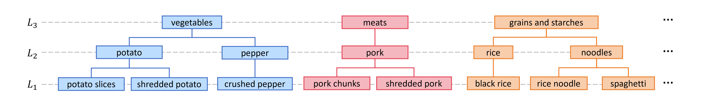
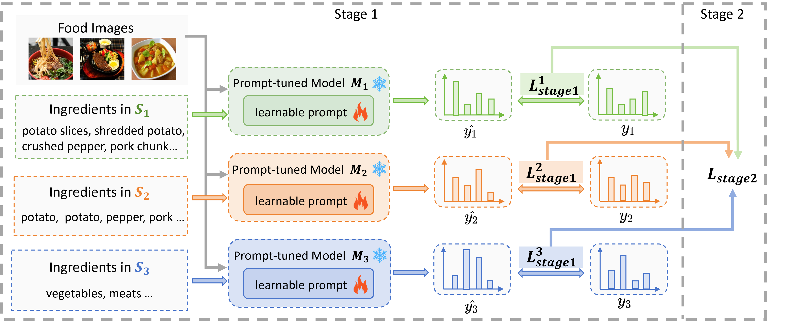
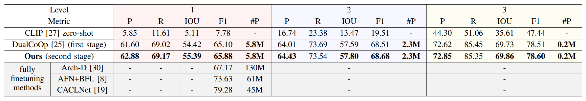
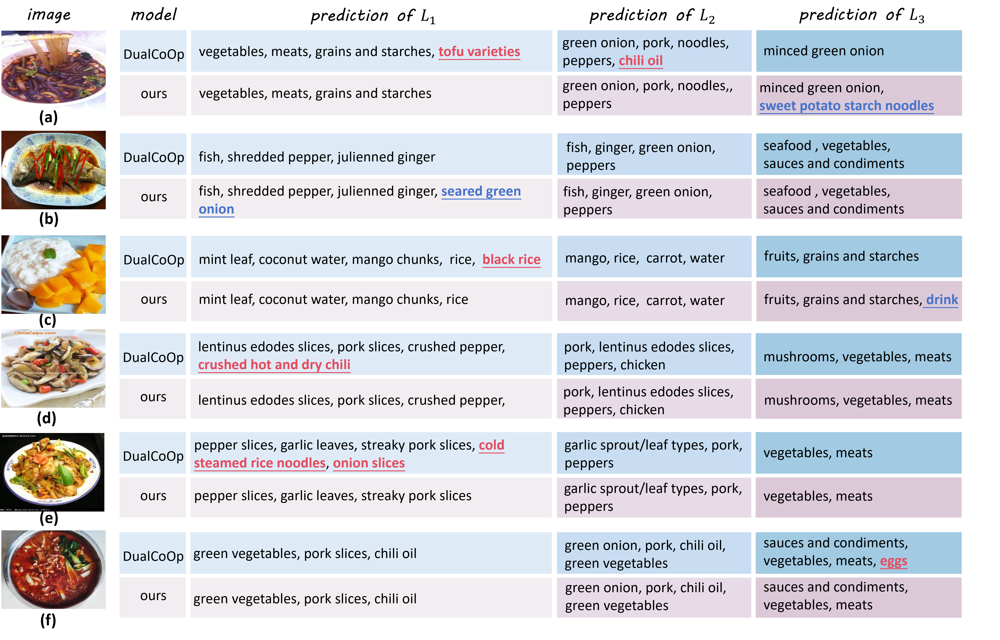

Method
We construct a three-level ingredient hierarchy H, where the i-th level denoted as Li, each level is composed of an ingredient labels set Si, i ∈ {1, 2, 3}. From levels 1 to 3, the set is constructed from fine-grained to coarse-grained ingredients. This figure presents the structure of H, with some examples of ingredients at different levels. For example, fine-grained ingredients prepared with specific cooking methods inS1, such as "potato slices" and "shredded pork", are grouped into broader ingredients like "potato" and "pork" in S2, which are then further grouped into more coarse-grained ingredients such as vegetables and meats in S3. We introduce three-level ingredient hierarchies to enhance both training performance and evaluation robustness.
Cross-hierarchy prompt tuning
We propose an efficient two-stage prompt tuning method based on pretrained visual language model (e.g. CLIP) without training the whole model. This figure depicts an overview of our method. We follow DualCoOp in the first stage. Given food images and hierarchical ingredient labels, three CLIP models, M1, M2 and M3, are prompt-tuned using S1, S2, and S3 as labels respectively. However, the first training phase fails to represent the hierarchical connections between labels at various levels. To model the connections, we further introduce the hierarchy to train the three models together in the second stage, supervised by a combination of their individual losses.
Results comparison
This table presents the performance of our proposed method (second stage), our baseline DualCoOp (first stage), along with zero-shot performance of CLIP and some fully fine-tuning methods. With prompt tuning by DualCoOp in the first stage, the performance is significantly boosted than CLIP-zero-shot in all the three levels, with only 5.8M, 2.3M and 0.2M trainable parameters for levels 1, 2 and 3 respectively. Importantly, our method after the second stage training achieves superior performance compared to DualCoOp without increasing the trainable parameters, which demonstrates the relationships among different hierarchy levels can enhance the accuracy of hierarchical ingredient recognition consistently. Though fully fine-tuning methods (highlighted in gray) show better results, the training cost is at least 7.7 times more than our method.
Qalitative examples which compare the prediction results of our method and DualCoOp across three levels of the hierarchy futher demonstrate effectiveness of our method.
Zero-shot evaluation
Except for enhancing training performance, the ingredient hierarchy can also be utilized for model evaluation.We evaluate predictions at each level and left-bottom figure presents zero-shot results in VireoFood172 based on LLaVA and CLIP . To investigate the model's performance for specific ingredients at different levels, we compute F1 score of each ingredient at different levels based on LLaVA and show some examples in right-bottom figure.

BibTeX
@article{gui2025efficient,
title={Efficient Prompt Tuning for Hierarchical Ingredient Recognition},
author={Gui, Yinxuan and Zhu, Bin and Chen, Jingjing and Ngo, Chong-Wah},
journal={arXiv preprint arXiv:2504.10322},
year={2025}
}